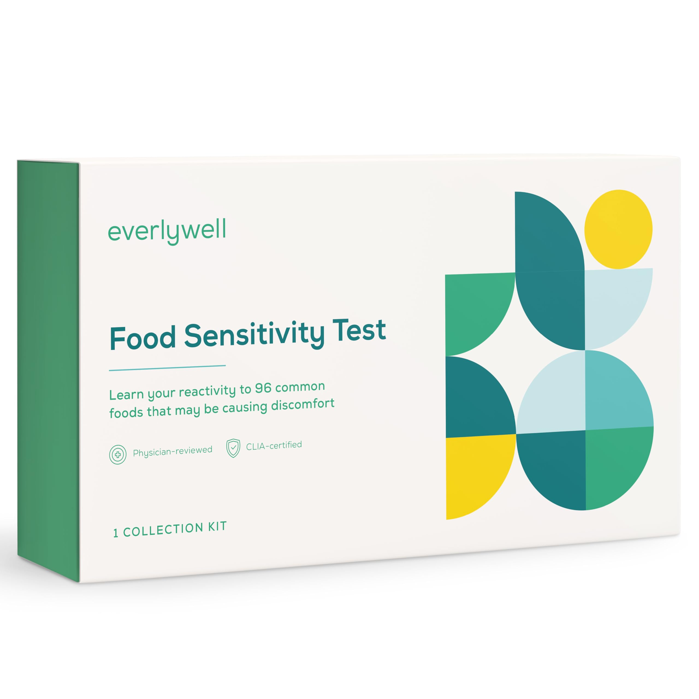
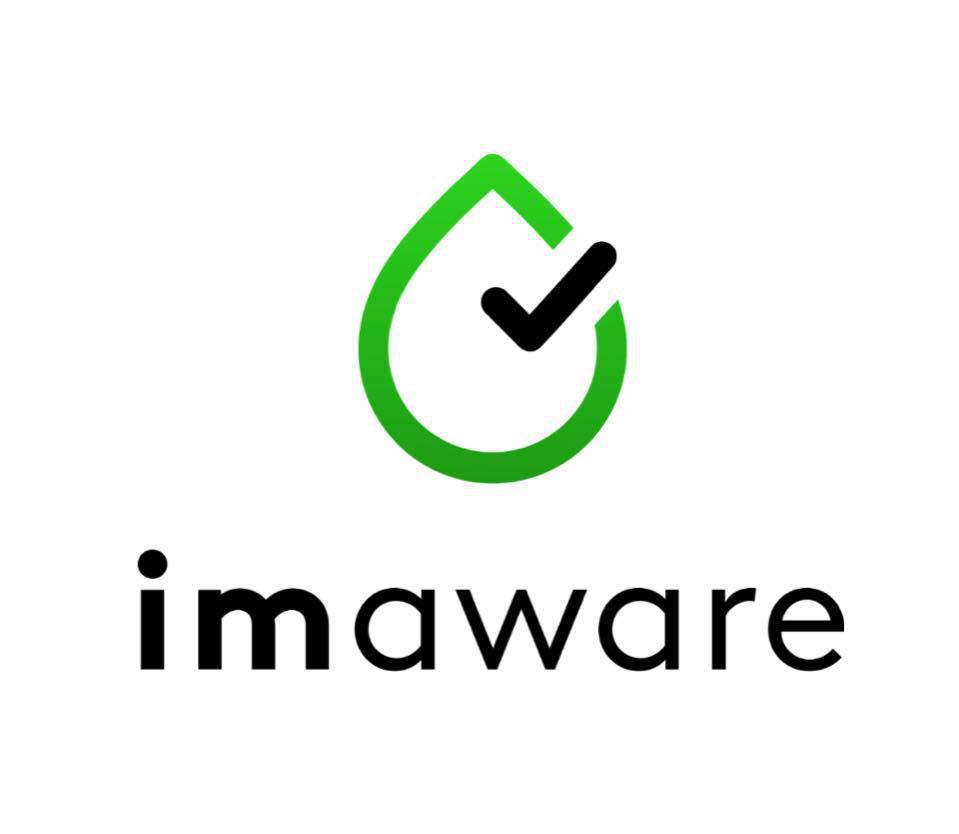

Analyse détaillée de chaque plateforme
 Everlywell MEILLEUR CHOIX
Everlywell est l'une des plateformes les plus complètes de tests de santé à domicile. Fondée en 2015, elle propose plus de 30 tests différents couvrant diverses préoccupations de santé, des allergies alimentaires aux hormones, en passant par les maladies sexuellement transmissibles et le cholestérol.
Avantages :
- Large gamme de tests disponibles
- Interface numérique intuitive pour accéder aux résultats
- Rapports détaillés avec recommandations personnalisées
- Consultation médicale incluse si les résultats sont anormaux
- Possibilité d'abonnement pour des tests réguliers
Inconvénients :
- Prix légèrement plus élevés pour certains tests
- Non disponible dans tous les pays
- Certains tests nécessitent des prélèvements sanguins qui peuvent être difficiles pour certaines personnes
Everlywell est idéal pour les personnes qui recherchent une solution complète avec une grande variété de tests et des résultats faciles à comprendre. La plateforme se distingue par ses rapports détaillés et ses conseils personnalisés qui aident à interpréter les résultats et à prendre des mesures concrètes pour améliorer sa santé.
En savoir plus sur Everlywell
LetsGetChecked
LetsGetChecked est une plateforme de tests de santé à domicile fondée en 2015 qui propose plus de 30 tests couvrant la santé sexuelle, le bien-être général, et la détection de maladies chroniques. Ce qui distingue LetsGetChecked est son approche axée sur le suivi médical, avec une équipe de médecins disponible pour discuter des résultats avec chaque client.
Avantages :
- Consultation médicale incluse avec tous les tests
- Résultats rapides (généralement 2-5 jours)
- Instructions claires et support client réactif
- Application mobile bien conçue pour suivre vos résultats
- Laboratoires certifiés CLIA et CAP
Inconvénients :
- Prix plus élevés que certains concurrents
- Certains tests nécessitent des échantillons de sang capillaire
- Moins d'options pour les tests d'allergies
LetsGetChecked est particulièrement recommandé pour ceux qui valorisent le suivi médical et la possibilité de discuter de leurs résultats avec un professionnel de santé. C'est également un excellent choix pour les tests de santé sexuelle et les tests hormonaux, domaines où la marque excelle particulièrement.
En savoir plus sur LetsGetChecked
 MyLab Box
MyLab Box
MyLab Box est une plateforme de tests de santé à domicile qui met l'accent sur la discrétion et la confidentialité, particulièrement pour les tests de santé sexuelle. La société propose plus de 25 tests différents, avec une spécialisation dans les tests de MST et les tests de fertilité.
Avantages :
- Emballage discret garanti
- Large gamme de tests de santé sexuelle
- Option de consultations de télémedecine disponible en supplément
- Tests combinés à prix réduits
- Service client réactif
Inconvénients :
- Consultation médicale non incluse dans le prix de base
- Interface utilisateur moins intuitive que certains concurrents
- Délais de résultats parfois plus longs
MyLab Box est une excellente option pour ceux qui privilégient la discrétion et qui souhaitent principalement effectuer des tests de santé sexuelle ou de fertilité. La plateforme offre un bon rapport qualité-prix, surtout pour les forfaits combinant plusieurs tests.
En savoir plus sur MyLab Box
 imaware
imaware est une plateforme plus récente qui se distingue par sa précision clinique et ses tests développés en collaboration avec des médecins de premier plan et des institutions médicales renommées. La société se concentre principalement sur les tests sanguins pour la détection précoce de maladies chroniques et le suivi de la santé générale.
Avantages :
- Tests développés avec des médecins de renom
- Précision clinique élevée
- Accepte certaines assurances santé
- Rapports détaillés avec explications scientifiques
- Bon pour le suivi des maladies chroniques
Inconvénients :
- Gamme de tests plus limitée
- Se concentre principalement sur les tests sanguins
- Prix relativement élevés
- Délais de résultats plus longs (5-7 jours en moyenne)
imaware est idéal pour les personnes souhaitant surveiller des conditions médicales spécifiques ou détecter précocement certaines maladies. La plateforme se distingue par sa rigueur scientifique et la qualité de ses rapports, bien que sa gamme soit moins étendue que celle de ses concurrents.
En savoir plus sur imaware